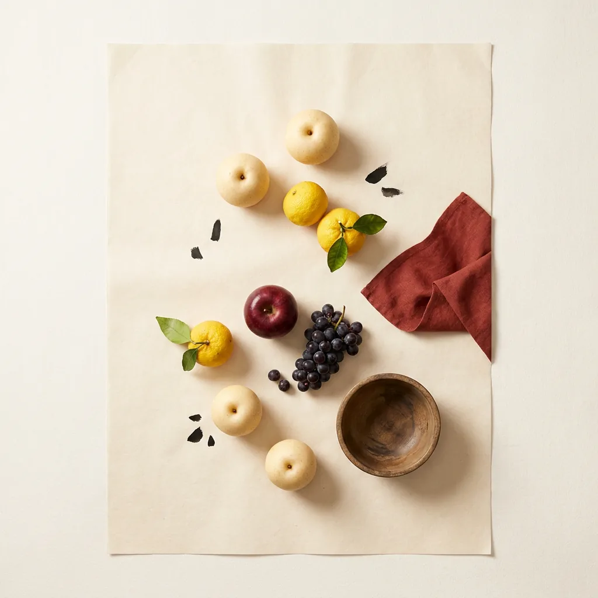

銘柄
カボセットショコラ
フランス菓子オランジェットを思わせる季節限定デザート酒。火入れ
— AROMA & FLAVOR ／ 香り・味の印象

— ABV
4% ALC.
— VOLUME
375ml
— PRICE
¥2,700
公式EC¥2,700(季節限定デザート酒)
— NOSE 香り
爽やかな柑橘(カボス)の香り
— PALATE 含み香・味わい
とろける口あたりのデザート酒、なめらか(炭酸なし)
— FINISH 余韻
ビターなチョコレートの余韻
— STRUCTURE 4軸構造スケール
蔵の公表情報と成分値に基づく saketto 編集部評価。造りからの読み取り（果実を副原料に使う／搾った酒）を含みます。
— PROFILE 6軸レーダー
同上。飲み手の印象を6軸で。
柑橘の皮をチョコレートで包んだフランス菓子『オランジェット』を、お酒で表現した季節限定のデザートサケ。香酸柑橘のカボスに、ココアパウダーと蜂蜜を合わせ、ビターな香りとほろ苦さ、やわらかな甘みを重ねた。アルコール約4%と低めで火入れ済み。食後の一杯やデザート代わりにも楽しめる、駅ナカ醸造所Fermenteriaらしい遊び心の効いた一本。
— PURCHASE
「カボセットショコラ」を探す
通販モールでの取り扱いは確認できていません。少量生産のため、蔵の公式オンラインショップや醸造所併設の店舗での販売が中心です。
- その他の醸造酒
- 酒税法上の区分。米に副原料を加えて醸すと「清酒」を名乗れず、この区分になる。クラフトサケの多くがここに入る。 くわしく →
- 精米歩合
- 米を磨いて残った割合。90%なら1割だけ削った状態で、米の成分が多く残る。
SOURCES ／ 出典
掲載内容は上記の一次ソースで確認しています。価格・在庫・度数はロットや時期で変わるため、購入時は各販売ページで最新の情報をご確認ください。